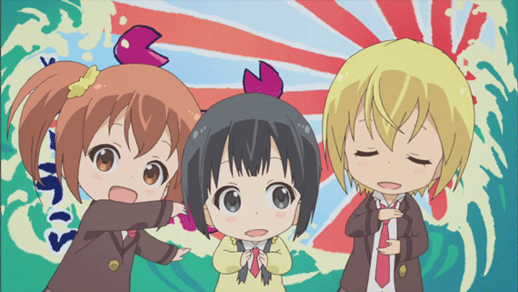
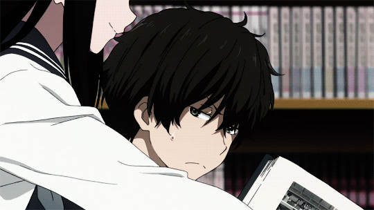
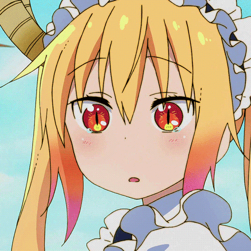

Akebi-chan No Sailor-fuku
A história segue Komichi Akebi, uma garota que sempre adorou uniformes de marinheiro, chegando ao ponto de pedir à mãe para costurar um se ela conseguir entrar na mesma escola de sua mãe. E assim, quando ela é aceita na escola de prestígio, Komichi fica em êxtase.

Aiura
A história gira em torno de Amaya, Iwasa e Uehara - três estudantes colegiais com zero de motivação - e seus colegas de classe. Seu lema de vida diário é "o que acontece quando não tem nada acontecendo?".
Amaama To Inazuma
A história é sobre Kouhei Inazuma, que vive sozinho com sua filha Tsumugi desde a morte da sua esposa. Ele tenta suprir a falta da mãe na vida da menina, mas seu trabalho como professor toma muito seu tempo e ele sente que falha em alguns aspectos, principalmente no quesito alimentação.

Hanamaru Youchien
É sobre uma menina do jardim de infância que está apaixonada por seu professor e tenta ganhar o seu afeto, mas sempre falha.

Hyouka
É sobre um garoto pouquíssimo energético que se junta ao Clube de Literatura Clássica a pedido de sua irmã mais velha, Tomoe Oreki, para impedir que suas atividades sejam encerradas. Ele diz que não gosta de desperdiçar energia, mas caso lhe dêem um mistério para ser analisado, consegue deduções lógicas e brilhantes sobre ele.
Kami-tachi Ni Hirowareta Otoko
É sobre um empresário japonês de meia-idade Ryoma Takebayashi, que em um certo dia, chegou a um fim repentino e decepcionante. Ryoma nunca teve uma vida abençoada, mas após a sua morte, três grandes deuses procuraram a sua cooperação e reencarnaram-no como uma criança num outro mundo com espadas e magia.

Kiniro Mosaic
A história começa com Oomiya Shinobu, 15 anos, aparentemente uma garota Japonesa pura que passou um tempo na Grã-Bretanha. Mesmo depois de voltar ao Japão, ela ainda sente falta do tempo que ficou no exterior. Um dia, chega uma carta de Alice, a garota da família que recebeu Shinobu na Grã-Bretanha.

Boku No Tonari Ni Ankoku Hakaishin Ga Imasu
É sobre Koyuki Seri, um estudante do colegial com propensão para mandar tiradas bem ácidas… E ao mesmo tempo, ele odeia quem merece receber essas tiradas! Para sua infelicidade, ele atraiu a atenção de Hanatori Kabuto, que sofre de delírios de grandeza.

Senryuu Shoujo
É sobre Yukishiro Nanako, uma garota que escreve poemas para se comunicar. Junto do ex-delinquente Busujima Eiji, ela se junta ao clube de literatura da escola. Apesar da limitação em sua comunicação, eles não têm problemas em aproveitar a vida escolar.

Kobayashi-san Chi no Maid Dragon
Conta a história de Kobayashi, uma trabalhadora de escritório com uma vida simples. Ela mora em um pequeno apartamento sozinha, até salvar a vida de um dragão chamado Tohru com a capacidade de se transformar em uma adorável garota humana
